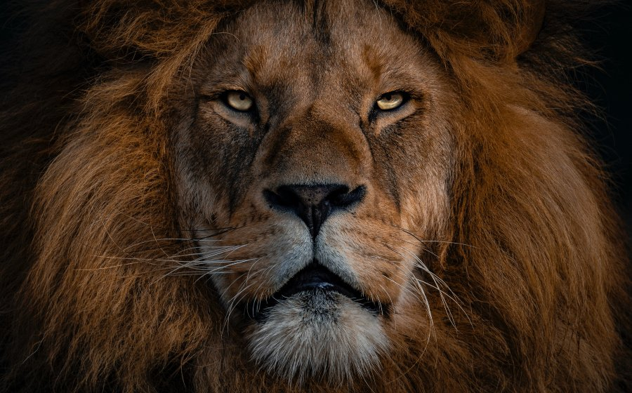
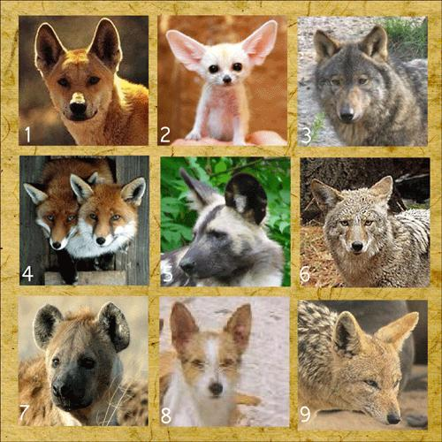

REPTEIS
CANINOS
| ESPECIES | LOCAL | DIETA |
|---|---|---|
|
 LEÃO |
AFRICA | CARNIVORO |
O leão é um mamífero pertencente à ordem Carnivora e família Felidae, sendo conhecido como
“rei das selvas”. Ele se alimenta de outros animais, como gnus e zebras, e vive em grupos, que
apresentam divisões bem marcadas, sendo o macho responsável pela defesa do grupo e a fêmea pela
caça e cuidado com os filhotes.
Apesar de serem admirados por sua força, atualmente as populações de leões estão em declínio,
sendo a espécie classificada como vulnerável pela IUCN (sigla em inglês para União Internacional
para a Conservação da Natureza). Os leões costumam ser divididos em subpopulações asiáticas e
subpopulações africanas. Neste texto falaremos mais a respeito do leão-africano.
| ESPECIES | LOCAL | DIETA |
|---|---|---|
|
ONÇA |
AMERICA DO SUL | CARNIVORA |
A onça-pintada (Panthera onca) é uma espécie de felino de corpo robusto e musculoso encontrada
em praticamente todos os biomas brasileiros, com exceção do Pampa. Esse mamífero carnívoro é
considerado o maior felino das Américas e o maior animal carnívoro da América do Sul.
Atualmente, tem sido ameaçado em virtude da caça e da destruição de seu habitat.
| ESPECIES | LOCAL | DIETA |
|---|---|---|
|
LEOPARDO |
AFRICA/ASIA | CARNIVORO |
O leopardo é um felino pertencente ao mesmo gênero do tigre, leão e onça-pintada, o gênero Panthera.
Esses animais são encontrados na África e Ásia, onde ocupam diferentes habitat. São excelentes
caçadores e também exímios escaladores de árvore. A capacidade de escalar árvores é uma característica
importante, permitindo que o leopardo consiga levar suas presas para o topo de árvores e se alimentar
sem medo de que outros animais roubem sua refeição. Os leopardos vivem de 10 a 12 anos no ambiente
selvagem e de 21 a 23 anos no cativeiro.
| OUTROS ESTUDOS |
REPTEIS |
 CANINOS |
|
|---|---|---|---|